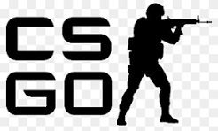
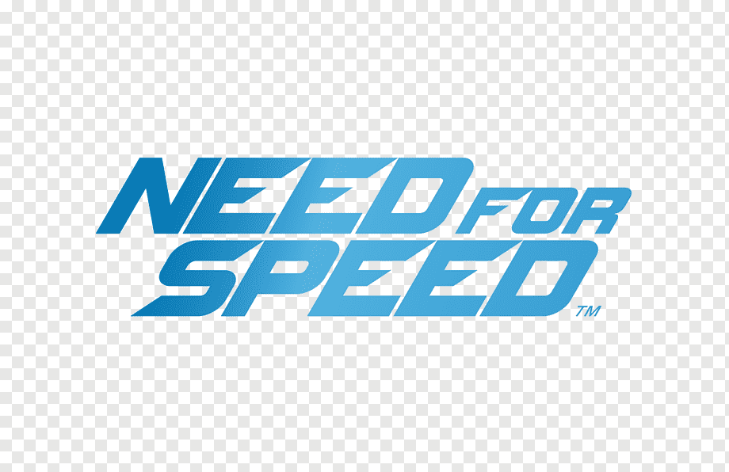
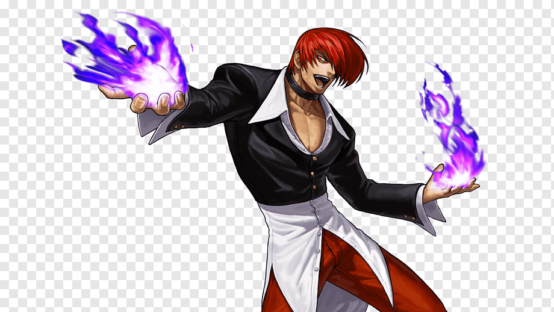

Jogo 1

Free Fire[a] é um jogo eletrônico mobile de ação-aventura do gênero battle royale, criado pela desenvolvedora vietnamita 111dots Studio e publicado pela Garena.[2] O jogo obteve um beta aberto em novembro de 2017 e foi lançado oficialmente para Android de iOS em 4 de dezembro de 2017.[1][3][4] O jogo consiste em cinquenta jogadores que caem de paraquedas em uma ilha à procura de armas para eliminar os demais jogadores e equipamentos para aumentar o tempo de sobrevivência na partida.[5] Inspirado em PlayerUnknown’s Battlegrounds (PUBG) — um jogo do mesmo gênero[6][7] — Garena Free Fire se tornou um sucesso instantâneo, atingindo, até outubro de 2018, a marca de 7,5 milhões de jogadores — refletidos pela quantidade de downloads — somente em dispositivos Android, tornando-se um dos jogos de Android mais baixados de 2018 e batendo grandes títulos como PUBG Mobile e Clash Royale.[8] Em 2018, por sua popularidade, Free Fire recebeu o prêmio de "Melhor Jogo em Voto Popular" pela Google Play Store,[9] além da criação de competições profissionais em determinadas partes do Brasil e do mundo.[8]
Jogo 2
Counter-Strike: Global Offensive (CS:GO) foi um jogo online desenvolvido pela Valve Corporation e pela Hidden Path Entertainment, sendo uma sequência de Counter-Strike: Source. É o quarto título principal da franquia.[1] Foi lançado no dia 21 de agosto de 2012 para as plataformas Windows e OS X no Steam, Xbox 360 (por meio da Xbox Live Arcade), e uma versão exclusiva para os EUA para PlayStation 3 (por meio da PlayStation Network). A versão de Linux foi lançada em setembro de 2014 (com suporte para o sistema Ubuntu a partir da versão 12.05). O jogo conta com conteúdo clássico de tiro, como versões retrabalhadas de mapas clássicos, bem como novos mapas, personagens e modos de jogo.[2] O sistema multiplayer multi-plataformas foi planeado entre jogadores de Windows, OS X, Linux e PSN, mas acabou excluindo o PSN por causa das diferenças na frequência de atualização dos sistemas.[3][4] A versão da PSN oferece três formas de controles, que inclui DualShock 3 e PlayStation Move. Counter-Strike: Global Offensive foi o jogo mais vendido pelo Steam no Brasil, no ano de 2015, com a compra de mais de 205 mil cópias do jogo da Valve entre abril e dezembro de 2015. Em segundo lugar ficou Grand Theft Auto V com 190 mil unidades vendidas.[5][6]
Jogo 3
Need for Speed é uma série de jogos eletrônicos de corrida automóvel publicada pela Electronic Arts (EA) e produzida por vários estúdios incluindo o canadiano EA Black Box, o britânico Criterion Games e o sueco Ghost Games. É considerado por muitos críticos e fãs de jogos de corrida, como a melhor franquia de jogos de corrida de todos os tempos.[carece de fontes] O primeiro título, The Need for Speed foi lançado em 1994. Todos os jogos da série consistem em carros de corrida em vários circuitos fechados ou não. Alguns títulos incluem ainda perseguições policiais nas corridas. Em novembro de 2020, foi lançado uma versão remasterizada do jogo Need For speed: Hot Pursuit (2010). O mais recente título da série, Need for Speed: Unbound, foi lançado em novembro de 2022. Em 2012, depois da reestruturação da Black Box, a Criterion Games anunciou que ficaria com o total controle da série.[1] No entanto, em 2013, as produtoras Ghost Games Ghost Games UK e Criterion Games juntaram forças para o futuro da série. A equipa da Ghost Games UK consiste em 80% de ex-empregados da Criterion Games.[2][3] Os jogos Need for Speed tem sido bem recebidos pelos críticos e é uma das séries de videogames mais vendidas de sempre. Actualmente, já foram vendidas mais de 150 milhões de cópias de jogos Need for Speed.[4] Devido a sua popularidade a serie já expandiu para outras formas de mídia incluindo uma adaptação cinematográfica e brinquedos Hot Wheels.[5]
Jogo 4
The King of Fighters 2002: Challenge to Ultimate Battle é um jogo de luta produzido pela Eolith e Playmore para o Neo Geo em 2002. É o nono jogo da série The King of Fighters e o segundo a ser produzido pela Eolith. Foi lançado em 10 de outubro de 2002 para Arcades, baseados no sistema MVS e depois portado no para o Dreamcast em jogo lançado em 19 de junho de 2003, Playstation 2 no dia 25 de Março de 2004 e Xbox em 24 de março de 2005. Também é possível jogar a versão clássica no The King of Fighters 2002: Unlimited Match para Playstation 2, lançado em 26 de fevereiro de 2009.